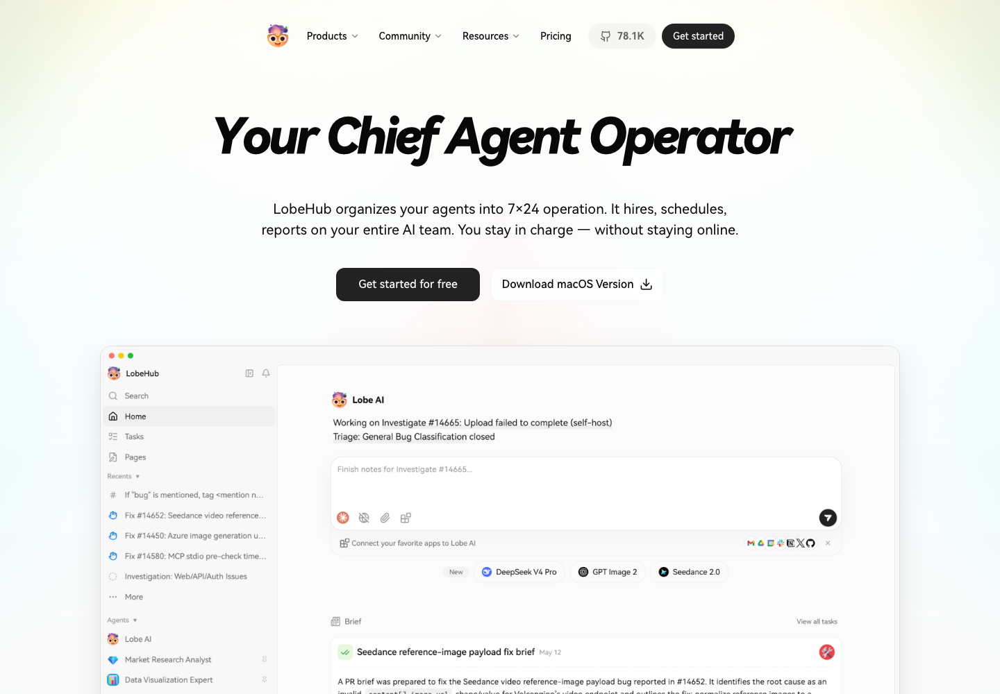
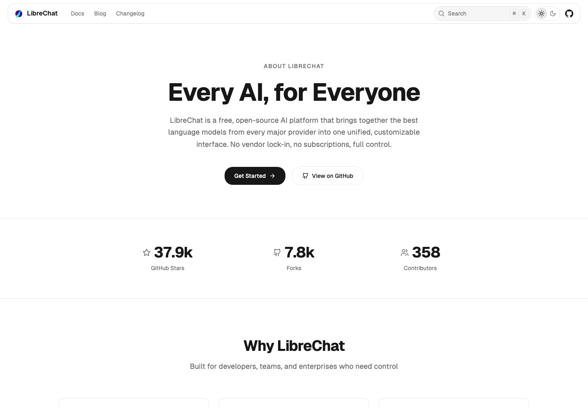
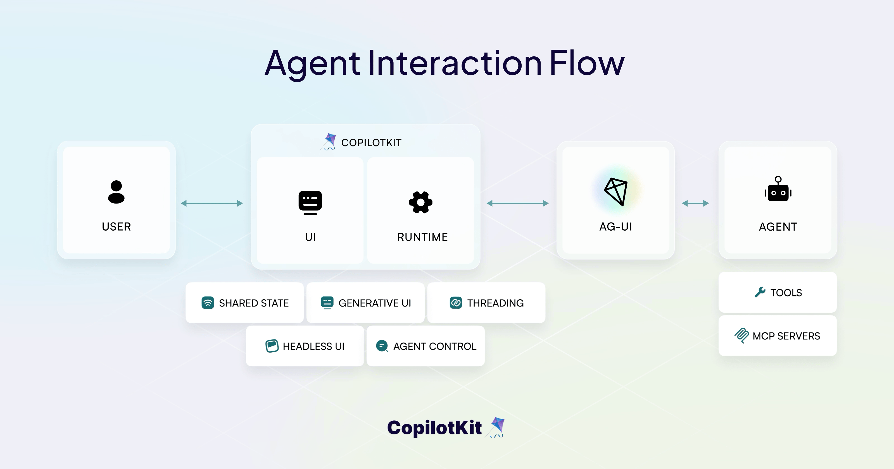
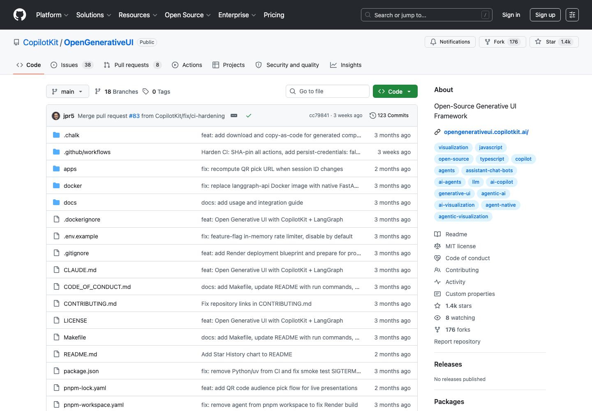
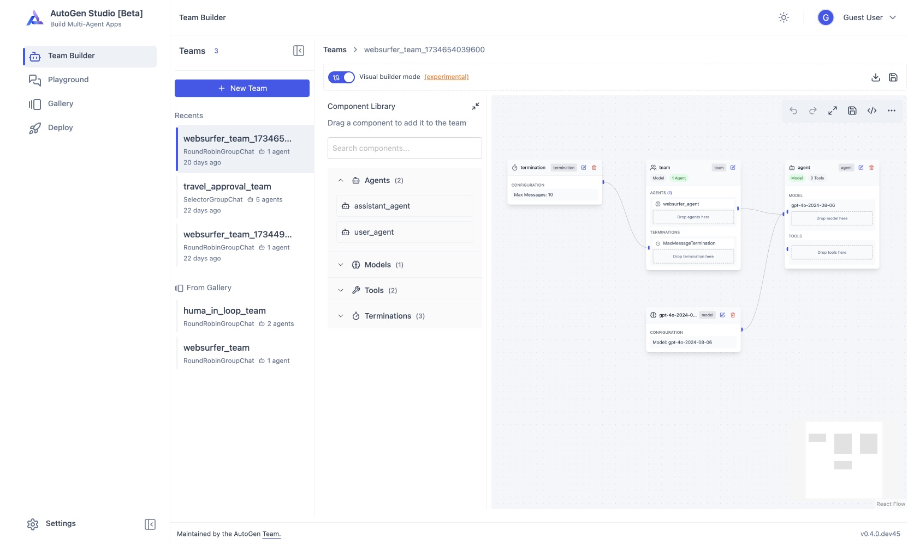
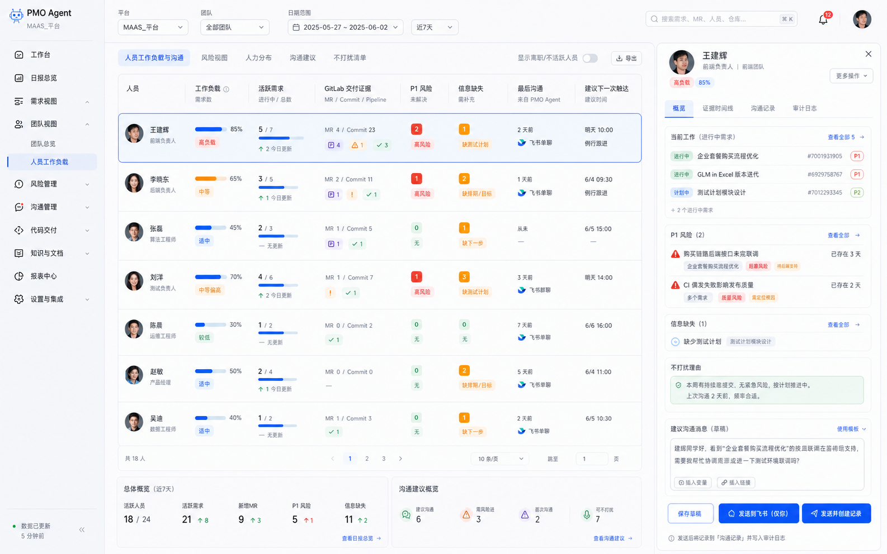
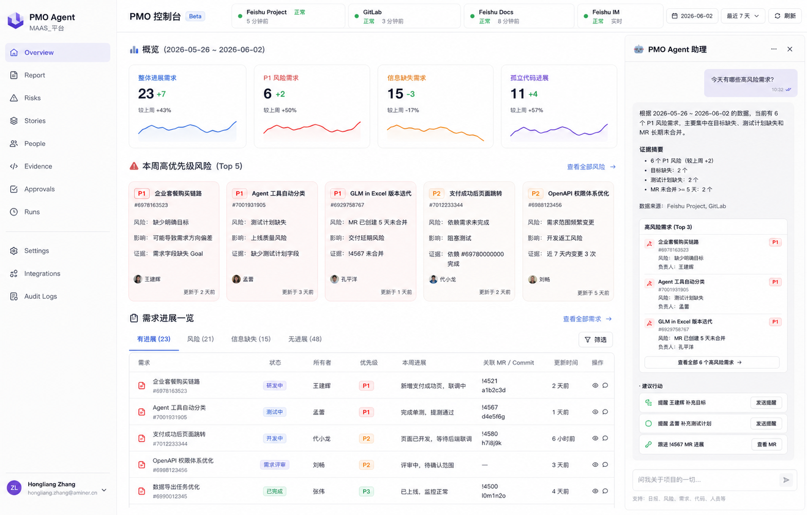
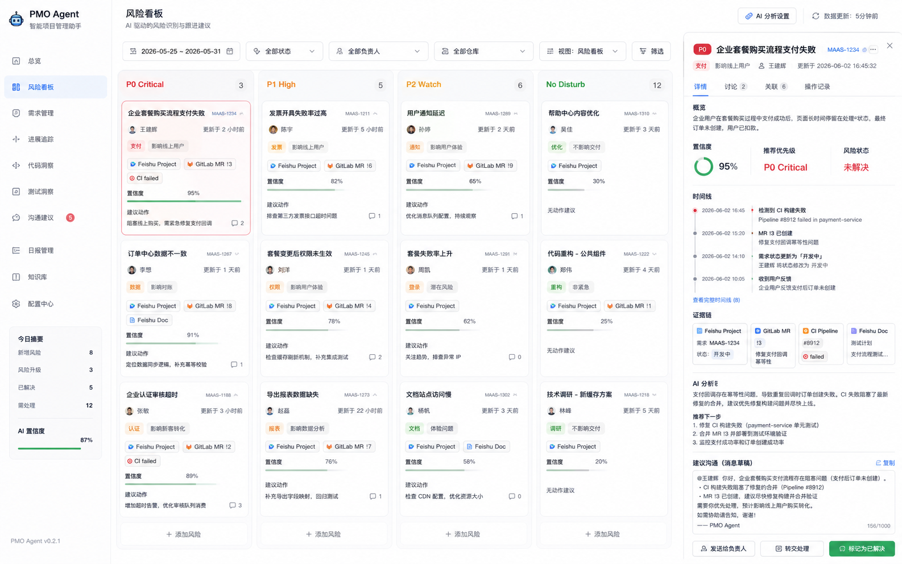

真实截图：open-webui/open-webui README demo.png
真实截图：open-webui/open-webui README demo.png
PMO Agent Web UI Research · 2026-06-03
从“能聊天”升级为可信的 PMO 工作台
这个 HTML 把原 Markdown 调研转成面向产品决策的图文版：每个参考产品都提炼它值得借鉴的交互模式，并给出 PMO Agent 的三套界面草图和推荐方向。
参考产品
Mobbin 风格模式
三套草图方案
推荐路线
产品定位
PMO Agent 不应该照搬 Open WebUI 或 LibreChat 的通用聊天首页。它更像一个“项目运营控制台”：状态、风险、证据、审批是主路径，聊天只是可解释交互层。
应该做
- 日报、风险、需求、人员、证据链、审批、运行记录在同一工作台内闭环。
- Agent 输出结构化卡片：运行中、成功、失败、待审批、证据来源。
- 自然语言可以问，但高风险动作必须确认和审计。
不应该做
- 不要把首页做成普通聊天窗口。
- 不要把所有需求平铺成一个巨大表格。
- 不要让模型自由生成核心业务报告结构。
参考产品图文分析
下面每张图都使用公开官网、README、GitHub 附件或官方文档中的真实截图/动图。本节重点不是复刻视觉，而是从真实界面中提炼适合 PMO Agent 的信息架构和交互模式。
真实截图：open-webui/open-webui README demo.png

真实截图：lobehub.com 官网首页
真实截图：librechat.ai/about 官网页面
真实动图：CopilotKit README user attachment
真实截图：OpenGenerativeUI GitHub 项目页OpenGenerativeUI
展示 Agent 动态生成图表、diagram、widget 的方向。PMO 可以借鉴“动态分析视图”，但核心报告不应让模型任意生成。
PMO 借鉴：用于风险趋势、证据链图、需求状态流，不用于日报主结构。

真实截图：microsoft/autogen AutoGen Studio docsAutoGen Studio
适合原型化多 Agent workflow、skills、models 和调试，但官方定位不是生产就绪应用。PMO 可借鉴 workflow 可视化和运行调试。
PMO 借鉴：展示每日核查 pipeline 和失败阶段重试，不照搬拖拽编排作为主流程。
可参考的 Mobbin / 成熟 SaaS 模式
不直接复刻具体页面，而是提炼成熟项目管理、CRM、客服、数据平台常用的交互模式。
Linear / Jira 风格列表
高密度表格、状态 chip、优先级、owner、更新时间，适合需求和风险池。
Asana / Height 风格项目视图
列表、看板、时间线多视图切换，适合需求进度和里程碑。
Attio / HubSpot 风格详情抽屉
选中对象后右侧展示字段、活动、证据和下一步，适合需求详情。
Intercom / Zendesk 风格侧边对话
聊天不占据主页面，而是围绕当前对象解释、建议、执行动作。
Datadog / Linear Ops 风格运行日志
运行阶段、失败原因、重试按钮、健康状态，适合 PMO worker 和日报生成。
Notion / Coda 风格证据块
把 GitLab MR、飞书项目字段、飞书文档摘录组织成可引用证据。
PMO Agent 关键草图方案
以下三张为生成式概念图，用于讨论产品方向。它们应该被理解为信息架构草图，不是最终视觉稿。

方案 A：PMO Cockpit 工作台首页
首页聚合数据源健康、今日指标、重点风险、今日进展和右侧 Agent 侧栏。适合 PMO Agent 的第一版产品化页面。
- 优点：符合“今天什么值得关注”的核心问题。
- 优点：不把用户扔进空聊天框。
- 风险：如果指标和卡片太多，需要强筛选和默认排序。
推荐作为第一版主方案。

方案 B：Risk Triage 风险分诊台
以风险优先级为主轴，卡片化展示 P0/P1/P2、证据、置信度、建议动作和审批按钮。适合风险治理深入后作为二级页面。
- 优点：非常适合“我今天要处理什么风险”。
- 优点：证据链和沟通草稿容易放进详情抽屉。
- 风险：不适合作为唯一首页，会弱化进展和人员视图。
推荐作为 `/risks` 页面，不建议作为唯一首页。

方案 C：People & Communication 人员/沟通视图
按人组织需求、风险、最近交付、上次沟通和建议触达。适合解决“每个人在做什么、是否需要打扰”。
- 优点：贴合你最初的第二个核心场景。
- 优点：能表达 no-disturb 逻辑，减少无效催办。
- 风险：需要较好的人员映射和项目字段维护，否则容易误判。
推荐作为第一版的重要二级页面，并在首页露出摘要。
最终建议
用方案 A 做第一版壳子，方案 B/C 作为两个主工作流页面，Agent Chat 只作为右侧上下文入口。
| 阶段 | 页面 | 目标 | 不做什么 |
|---|---|---|---|
| V1 | Dashboard + Latest Report + Runs | 一眼看懂今日状态、打开日报、看到运行是否健康。 | 不做通用聊天，不做复杂权限后台。 |
| V1.5 | Risks + Approvals | 把风险分诊、建议沟通、审批动作闭环。 | 不允许自然语言直接发送消息或写回项目。 |
| V2 | Stories + People + Evidence | 支持按需求、人、证据链深挖，形成长期项目记忆。 | 不把所有原始数据 dump 给用户。 |
| V3 | Agent Sidecar | 自然语言问答、解释风险、触发补跑、生成审批草稿。 | 高风险动作仍然必须审批。 |
参考来源：Open WebUI、LobeHub/LobeChat、LibreChat、CopilotKit、OpenGenerativeUI、AutoGen Studio 的公开文档与开源仓库；Mobbin 作为成熟 SaaS 模式参考方向。